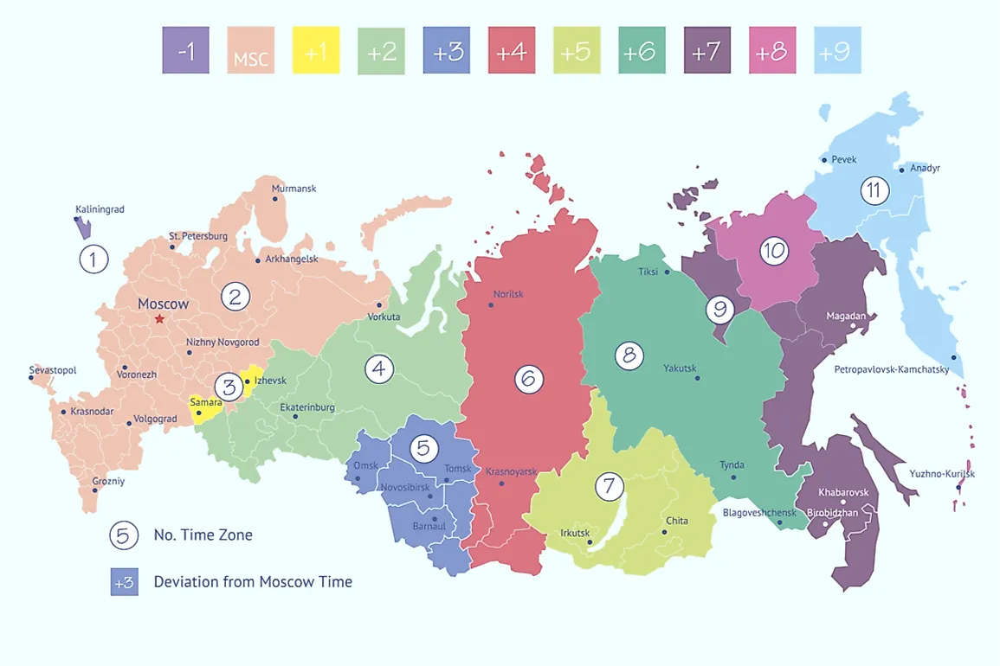
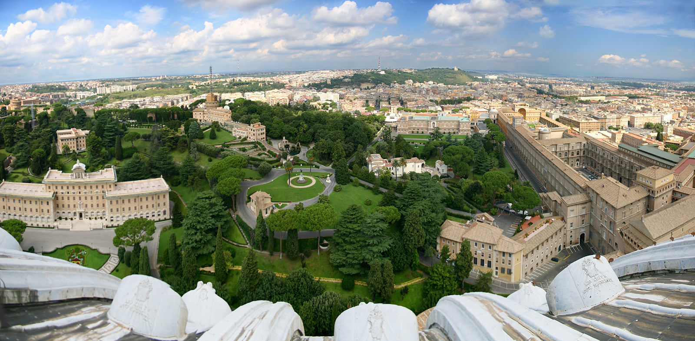
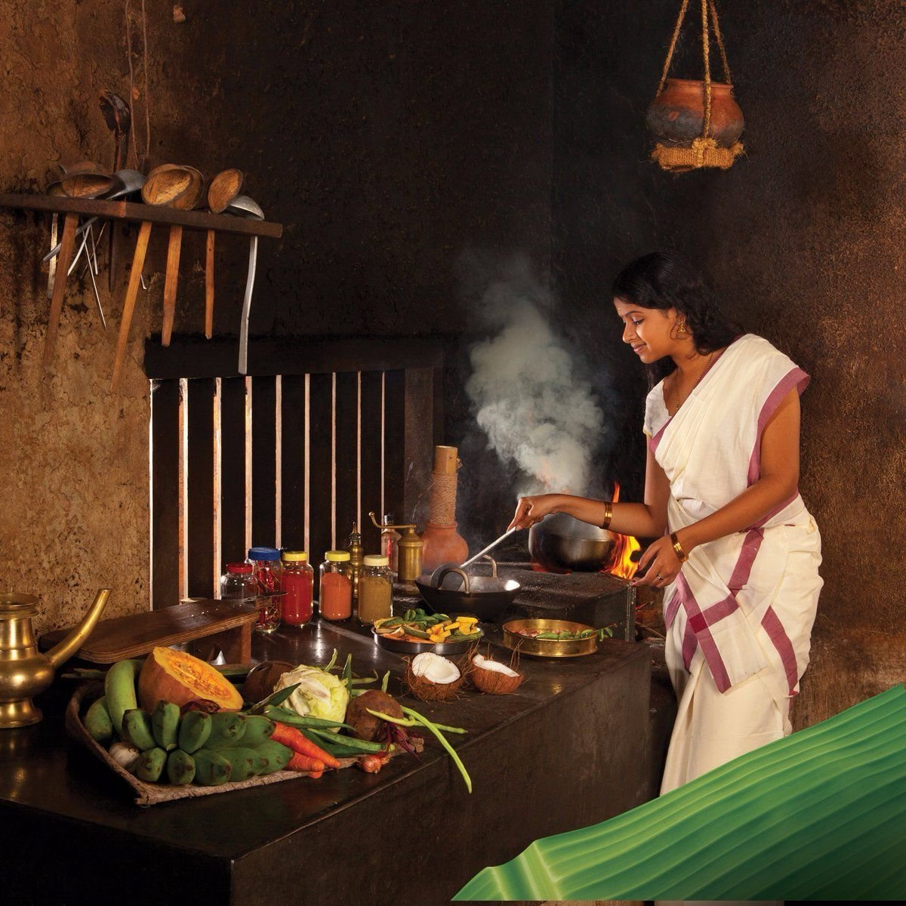
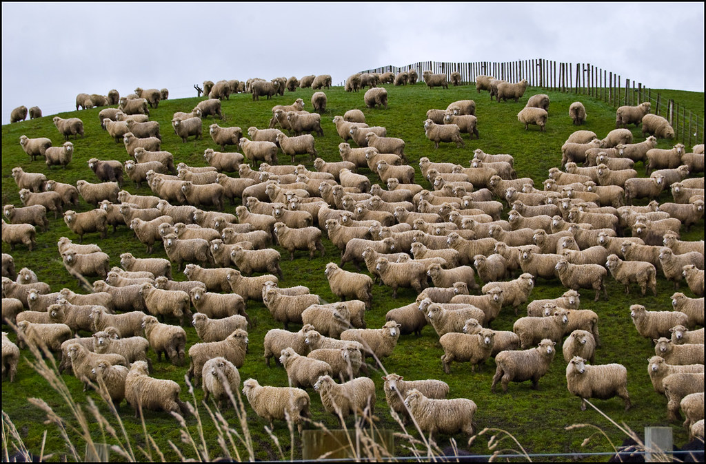
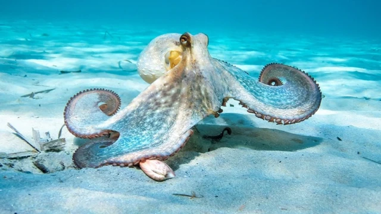

Rossiya
Rossiya 11 ta vaqt zonasi bo'yicha joylashgan — bu dunyodagi eng katta davlat ekanini isbotlaydi!

Kichik davlat
Vatikan — eng kichik davlat. Maydoni atigi 44 gektar.
Madaniyat
Yaponiyada poyezdlar sekundigacha aniq harakat qiladi. Kechikkanida uzr so'rashadi!

Vegetarianlar
Hindistonda 300 milliondan ortiq odam vegetarian — bu butun Yevropa aholisi soniga teng.
Ilm-fan
Antarktidada ham bankomat mavjud. U yerda yashovchi olimlar undan foydalanadi!
Internet
Google har soniyada 100 mingdan ortiq so'rovni qabul qiladi. Tasavvur qil!
Sayohat
3. Yerda 5 milliarddan ortiq odam hali hamon tug‘ilganidan beri biror samolyotga chiqmagan! Sayohat qilish imkoniyati har kimda yo‘q – bu fakt

Avstraliya
Avstraliyada odamlar sonidan ko'proq qo'y bor — har bir odamga 3 ta qo'y to'g'ri keladi!
Fikrlash va ixtirolar
Da Vinchi o‘ng qo‘li bilan yozib, chap qo‘li bilan chizgan. U ikki qo‘llama (ambidekstr) edi.Ambidekstrlar juda kam: taxminan butun dunyo aholisining atigi 1% ambidekstr hisoblanadi. Juda noyob!

Sakkizoyoq
Ahtapotlarning uchta yuragi bor! Ikkitasi qon kislorodini o‘pkalarga olib boradi, bittasi esa tanaga yuboradi.Ularning genetik kodi o‘z-o‘zini tahrirlashi mumkin — ya’ni ular “tirikligicha” DNK kodlarini o‘zgartirib turadi. Real hayotdagi mutantlar!

Koala
Koalalar faqat evkalipt barglarini yeydi. Evkalipt barglari zaharli bo‘lishiga qaramay, koalaning ovqat hazm qilish tizimi maxsus moslashgan.Koalalar inson barmog‘iga juda o‘xshash panjalarga ega, hattoki ularni adashtirish ham mumkin!

Koinot
Yulduzlar aslida turli rangda yonadi! Bizga aksari oq yoki sariq ko‘rinsa ham, ular ko‘k, oq, sariq, to‘q sariq va qizil bo‘lishi mumkin.

Kitoblar
Yapon tilida "tsundoku" degan so‘z bor. Ma’nosi: o‘qish niyatida kitob sotib olib, ularni hech qachon o‘qimasdan yig‘ib qo‘yish.

Musiqa
Bitlz guruhi hech qachon notani o‘qishni professional darajada bilmagan. Ular hamma narsani quloq va his-tuyg‘u bilan yaratgan.

Imkonsizlik
Kosmosda yig‘lash imkonsiz! Chunki tortishish yo‘qligi sabab ko‘z yoshlari oqmaydi – ular ko‘zingizda “shar” bo‘lib qolaveradi.

Nosozlik
"Déjà vu" — miyamizning vaqtincha “nosozligi” bo‘lib, hozirgi lahzani ilgari ko‘rgandek tuyulish holatidir. Bu sizning miyangiz bir vaqtning o‘zida ikki xil xotira yo‘lini ishga tushirgani uchun yuz beradi.

Asal
Asal hech qachon yomonlashmaydi. Ming yillik asal ham iste’mol qilishga yaroqli bo‘ladi — bu tabiiy konservantlarning ta’siri!

Anatomiya
Inson yuragi bir umrda 2,5 milliard martadan ko‘proq uradi. Bu – o‘rtacha 70-80 yillik hayot davomida sodir bo‘ladi.

Neptun
Neptun Quyosh atrofida bir marta aylanib chiqishi uchun 165 yil ketadi. Shuning uchun, 1846-yilda ochilgan Neptun, hali Quyosh atrofida faqat bir marta aylanishni tugatdi (2011-yilda).
Ismlar
Islandiyada familiyalar o‘rniga otasining ismi ishlatiladi. Jónsson yoki Jónsdóttir kabi.

Daryolar
Afrika qit’asida Nil daryosi eng uzun daryo hisoblanadi (taxminan 6,650 km). Lekin ba’zi tadqiqotchilar Amazonkani eng uzun deyishadi – bu hali ham bahsli mavzu.

Adabiyot
"Alice in Wonderland" asari aslida matematik sirlar va mantiqiy topishmoqlarga to‘la. Uning muallifi Lewis Carroll aslida matematik bo‘lgan (asl ismi: Charles Dodgson).
Dori?
Ketchup dastlab dori sifatida ishlatilgan – 1830-yillarda uni oshqozon og‘rig‘iga qarshi dorivor vosita deb sotishgan!

Kulgi
Gelotofobiya — kulishdan qo‘rqish, ayniqsa kulgili filmlar va komediyalarga nisbatan! Yoki, aksincha, ba'zi odamlar kulishlarni ajralmas tarzda sevishadi, ular hayotlarini "kulish terapiyasi" sifatida ko‘rishadi!

Hayvonlar olami
Jirafaning tili 45 santimetr uzunlikka ega. Shuning uchun u quloqlarini ham bemalol yalay oladi.BU nodatiy holat

Odamzod
Odamzod shunday yaratilganki, unga kimdir jilmayib boqsa, u ham albatta jilmayish bilan javob qaytaradi. Bu fanda emotsional empatiya deb ataladi.

Pizza
Pitsa qadimgi Rimda boshida "panella" deb nomlangan, u yog‘li va mayda o‘simliklar bilan yopilgan bo‘lib, asosan iste’mol qilish uchun bunday xususiyatga ega edi.

Bakteriyalar
Bakteriyalar o‘ta mustahkam va kuchli jonivorlardir. Ular yuqori haroratda, kislorod yetishmaydigan sharoitda va hatto radioaktiv maydonlarda ham yashay olishadi!

Kalmar
Qopqoqsimon kalmarlar o‘zining rangini va yoqimli tuzilishini o‘zgartirib, yangi muhitlarga o‘zgarishga moslashadi. Ular shunday tezda rangni va tuzilishni o‘zgartira olishadi!

Kapalaklar
Kapalaklar uzoq masofalarga uchishdan oldin yangi ajoyib tilda ishlov berishadi. Ularning texnologiyalari va qamrov imkoniyatlari vaqt o‘tishi bilan o‘zgaradi.

O‘rgimchaklar
O‘rgimchaklar ba’zi turlarida o‘ziga "shaxsiy tarmoq" yaratishadi. Ularning to‘rlarida aniq geometrik naqshlar bor, ularni boshqa o‘rgimchaklar ko‘rsalar ham, o‘zgartirishga urinishadi!

Qaldirg‘ochlar
Qaldirg‘ochlar faqat bir joyda yashamaydi, ular tez-tez sayohat qilib, yangi hududlarga ko‘chib boradilar. Ba’zi qaldirg‘ochlar 1000 km dan ortiq masofani uchib o‘tishadi!

Akula
Akulalar yer yuzida 400 million yildan beri yashab kelmoqda! Bu ular dinozavrlardan ham avval paydo bo‘lgan degani.Akulada qo‘shimcha oshqozon mavjud bo‘lib, undagi ovqat 20 kungacha aynimaydi.

Chumolilar
Chumoli o‘limi yaqinlashganini sezgach, o‘z inini tashlab chiqib ketadi. Chumolilar o‘z inini isitish uchun tanalaridan foydalanadi, Ular quyoshda isinib olgach darhol inlariga yuguradi. Shuning uchun chumolilar inidagi harorat tashqi olamdan 10 daraja yuqori bo‘ladi.

Ayollar
Ayollarning bir o‘rim sochi 200 ming toladan iborat bo‘lib, 20 tonnagacha yukni ko‘tara oladi.Soch tarkibi – 95% keratin Soch asosan keratin degan oqsildan iborat. Bu modda tirnoqlarda ham mavjud.

Qish
Ba’zan qish hukmdorlardan birining buyrug’i bilan kelishi mumkin. Qanday qilib deysizmi? Bir paytlar Fransiya qiroli Lyudovik XIV yozda chanaga minishni xohladi. Hechqanday muammosiz Versal atrofida darhol tuz va shakardan tayyorlangan qor yo’lagi qurildi.

Chig`anoq
Dengiz chig`anog'ini qulog'imizga olib kelganda eshitadigan shovqin umuman okean emas. Biz faqat qulog'imizdagi qonning tomirlar orqali aylanishini eshitamiz.

Tarix
Statistikaga ko'ra – agar parkda otda odam shaklidagi yodgorlik bo'lsa va otning havoda ikkita old oyog'i bo'lsa, demak u jangda vafot etgan; agar bir oyog'i havoda bo'lsa, odam jangda olgan jarohatlaridan vafot etgan; agar barcha oyoqlari yerda bo'lsa, odam tabiiy sabablarga ko'ra vafot etgan.

Strategiya
Qadimgi Yevropa qal’alarida zinapoyalar har doim soat strelkasi bo‘yicha aylangan. Bu himoya strategiyasi: himoyachilar yuqoridan qilich bilan osonroq uradi, hujumchilar esa chap qo‘l bilan jang qilishga majbur bo‘lgan.

Futbol
Aksariyat futbol o'yinchilari har bir o'yin uchun taxminan 8-9 kilometr yugurishadi. Futbolchilik faoliyati davomida futbolchi Angliyadan Xitoygacha bo'lgan masofa bilan taqqoslanadigan masofani bosib o'tishi mumkin.